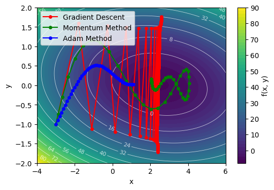

11. 機械学習における最適化#
この章では、最適化手法、中でもニューラルネットワークの訓練のための連続最適化手法を中心に解説する。
理がない限りニューラルネットワークの構造としてはシンプルな多層パーセプトロン(MLP)を対象とし、損失関数としては回帰問題に対する平均二乗誤差、分類問題に対する交差エントロピー誤差を想定しているが、なるべく一般的な内容を扱うようにする。
また、現代においても新たな最適化手法が提案され続けているため、ここでは代表的な手法を紹介するにとどめる。
11.1. 勾配降下法#
勾配降下法(Gradient Descent, GD)は、関数の最小値を見つけるための最も基本的な最適化手法である。
関数\(f(\boldsymbol{\theta})\)の勾配\(\nabla f(\boldsymbol{\theta})\)は、関数が最も急激に増加する方向を示すベクトルであり、 勾配降下法ではこの勾配の反対方向にパラメータ\(\boldsymbol{\theta}\)を更新することで、関数の値を減少させる、というのが基本的な考え方である。
最も単純なものが最急降下法であり、パラメータ\(\boldsymbol{\theta}\)の更新は以下のように行われる。
\(L\)は目的関数で、\(\eta\)は学習率(パラメータ更新のスケールを決めるパラメータ)とした。
ANN(MLP)の最適化においてはしばし、訓練データを小さなサブ集合(ミニバッチ)に分割し、各ミニバッチに対して勾配降下法を適用することが行われる。 加えて、全体・あるいはミニバッチの中からランダムにサンプルを選ぶなどする方法もあり、これを 確率的勾配降下法(Stochastic Gradient Descent, SGD) と呼ぶ。バッチに分けることで、各ステップでの計算コストが削減される上に並列計算が可能になる。 また、固定のデータを常に用いるよりも、ある種のノイズが導入され、局所最適解から脱出できることがある。
バッチサイズ\(|B|\)はミニバッチのサンプル数である。とくに\(|B|=1\)の場合をオンライン学習(online learning)と呼んだりもする。
SGDなどの勾配法はシンプルで実装も容易であるが、中々収束しない、局所最適解に陥りやすい、などの問題が生じることもある。加えて学習率をどのように設定するのかが非自明である。 データの特性に応じて、学習をステップに分けて学習率を変更させたり、指数関数や多項式を用いて学習が進むにつれて小さな学習率に変更するなどの工夫もなされてきたが、最適な学習率のスケジュールを見つけるのは一般に難しい。
そうした経緯から提案されたのが、勾配だけでなく、過去の更新情報を利用するモーメンタム法や、パラメータごとに異なる学習率を適応的に調整するAdaGrad, RMSProp, Adamなどの手法である。 年代に沿ってこれらの手法を紹介するのも楽しいが、続く節では、現代においても広く用いられているAdamを中心に説明する。
大雑把にいうと、モーメンタム法はそれまでの勾配の移動平均を計算し、その方向にパラメータを更新する手法である。これにより、勾配が振動する方向では更新が抑制され、安定した更新が可能になる。AdaGradやRMSPropは、各パラメータに対して異なる学習率を適応的に調整する手法であり、頻繁に更新されるパラメータの学習率を減少させ、まれに更新されるパラメータの学習率を増加させることで、効率的な学習を実現する。 Adamは、モーメンタム法とRMSPropの両方のアイデアを組み合わせた手法であり、各パラメータに対して適応的な学習率を計算しつつ、過去の勾配情報も考慮することで、効率的かつ安定した学習を実現する。
11.1.1. \(\clubsuit\) モーメンタム法#
勾配とは別に、その指数移動平均\(v_t\)を計算し、これを用いてパラメータを更新する。 谷に向かって転がしたボールの慣性を考慮するイメージである。
11.1.2. \(\clubsuit\) AdaGrad#
勾配の二乗の移動平均を計算し、これを用いてパラメータごとに異なる学習率を適応的に調整する。
ベクトルの要素ごとの積を\(\odot\)で表している。\(\epsilon\)はゼロ除算を防ぐための小さな定数である。
11.1.3. \(\clubsuit\) RMSProp#
勾配の二乗の指数移動平均を計算し、これを用いてパラメータごとに異なる学習率を適応的に調整する。
11.2. Adam#
Adamは、勾配降下法の様にその都度の勾配の情報だけを使うのではなく、以前の勾配の情報も有効活用しながら学習率も調整する手法である。
2014年にDiederik P. KingmaとJimmy Baによって提案されて以来、深層学習の分野で現代に至るまで広く用いられている。→arXiv:1412.6980
Adamでは、各パラメータ\(W_i\)に対して、以下のように更新を行う。
なお\(m_t, v_t\)はそれぞれ1次モーメンタム、2次モーメンタムと呼ばれ、element-wiseに計算する(つまり、各パラメータごとに計算しベクトルとして保持する)。 \(\beta_1, \beta_2\)はそれぞれ1次モーメンタム、2次モーメンタムの減衰率を表すハイパーパラメータであり、よく\(\beta_1=0.9, \beta_2=0.999\)が用いられる。 実際の更新式に用いるハット付きの量は、初期値を0に設定した場合のバイアスを補正するためのものである。
一次モーメント\(m_t\)は、勾配の指数移動平均を表し、過去の勾配情報を蓄積することで、勾配のノイズを平滑化し、安定した更新を可能にする。 二次モーメント\(v_t\)は、勾配の二乗の指数移動平均を表し、各パラメータの勾配の大きさを捉える。 これにより、勾配の大きさに応じて学習率を調整し、勾配が大きいパラメータの更新を抑制し、勾配が小さいパラメータの更新を促進する。
11.2.1. AdamW#
AdamWは、Adamの変種であり過学習を防止するための正則化手法であるWeight decay(重み減衰)を組み込んだものである。
SGDにおけるWeight decayは、パラメータの大きさを抑制することで過学習を防止する手法であり、L2正則化と等価になるが、Adamに対して単純にパラメータ更新の式にL2正則化項を加えてしまうと、重み減衰の効果が正しく働かないことが指摘され、そこで提案されたのがAdamWである。
AdamWの論文は、2017年にLoshchilovとHutterによって発表されたarXiv:1711.05101。
SGDにおけるWeight decayは、パラメータ更新の際の勾配に正則化項の勾配を加えることで実現される。
これは、誤差関数\(L_t\)に対してL2正則化項\(\frac{\lambda}{2} ||W||^2\)を加えたものを考えて勾配を計算していることに相当する。 この方法とのアナロジーで、Adamにおける勾配の計算に正則化項の勾配を加えることで正則化が期待できるが、Adamの更新式は勾配の大きさに応じて学習率を調整するため、正則化項の効果が不均一になり、期待通りに働かないことがある。
そこで、AdamWでは、Weight decayをパラメータ更新の際に直接適用することで、正則化の効果を均一に保つようにしている。
11.3. 二階微分を用いる方法#
勾配のみを用いる手法は、関数の形状に関する情報が限られているため、収束が遅い、局所最適解に陥りやすい、などの問題がある。これに対処するために、ヘッセ行列を用いた二階微分の情報を活用する方法がある。 二階微分の情報を用いることで、関数の曲率に関する情報を得ることができ、より効率的な最適化が可能になる。 一方で、ヘッセ行列の計算は計算コストが高く、特に高次元のパラメータ空間では実用的でないことが多い。
代表的な手法として、ニュートン法や準ニュートン法(L-BFGS法, etc.)などがある。 ニュートン法では、ヘッセ行列の逆行列を用いてパラメータを更新するのに対して、 準ニュートン法では、ヘッセ行列の近似を用いることで計算コストを削減する違いがある。
11.4. 二次元損失関数の最適化#
ここで、二次元の損失関数を例に、最適化手法の挙動を可視化してみよう。
適当な開始点 \((x_0, y_0)\) から始めて、勾配降下法、モーメンタム法、Adamで最適化を行い、その軌跡を可視化してみる。
